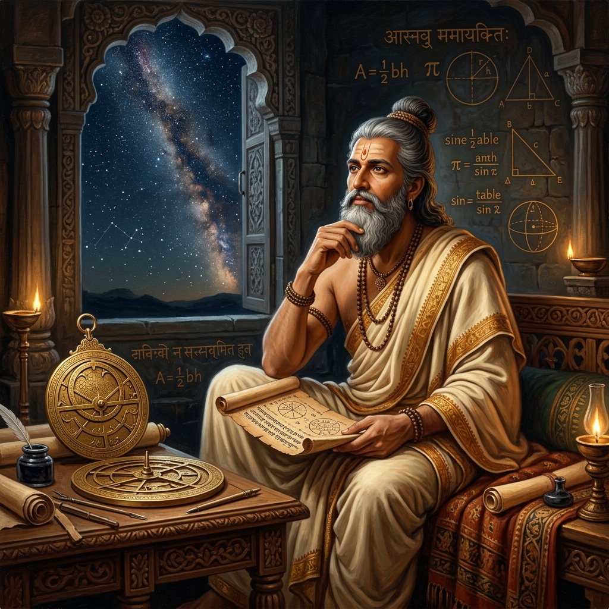

Introduction

Aryabhata (476–550 CE) was the first of the major mathematician-astronomers from the classical age of Indian mathematics and Indian astronomy. His major works include the Aryabhatiya and the Arya-siddhanta.
Long before the onset of the modern scientific era, Aryabhata proposed profound astronomical and mathematical theories. He brilliantly conceptualized the place-value system with zero, approximated the value of π, and discovered that the Earth rotates on its axis, laying down foundations that echo through centuries of global science.
Key Achievements
Approximation of Pi (π)
He accurately approximated the value of pi to 3.1416 and suggested that it might be irrational, an incredible revelation for his time.
Earth's Rotation
Proposed that the Earth rotates on its axis daily—contrary to prevalent geocentric theories—explaining the apparent movement of stars.
Sine Tables & Trigonometry
Developed fundamental trigonometric functions such as sine (jya), cosine (kojya), and versine (utkrama-jya), which later influenced global mathematics.
"Just as a man in a boat moving forward sees the stationary objects as moving backward, just so are the stationary stars seen by the people at Lanka as moving exactly towards the west."
- Aryabhatiya, Golapada Section